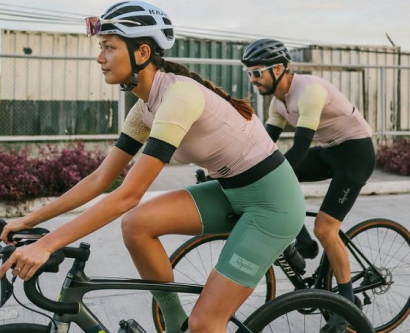

Наше медиа призвано помочь начинающим велосипедистам освоиться в езде по городу, узнать все правила и нюансы, а также стать самым модным велолюбителем

О нас
Мы — Алёна, Вика и Катя. И мы любим велосипеды. Этот проект стал для нас тем ресурсом, в котором мы сами когда-то нуждались и отчасти до сих пор нуждаемся.